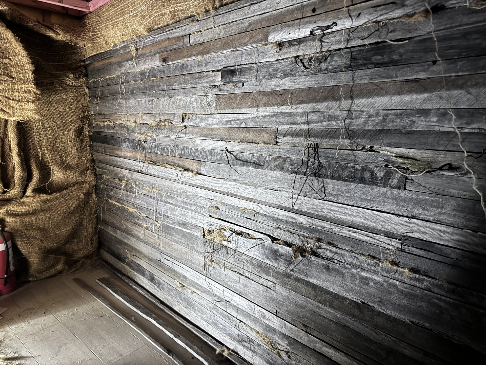
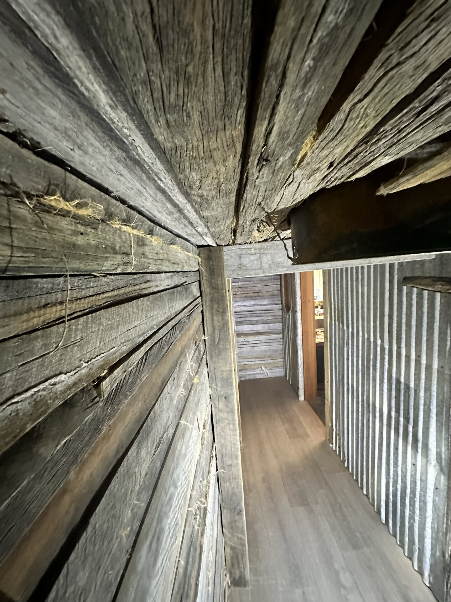
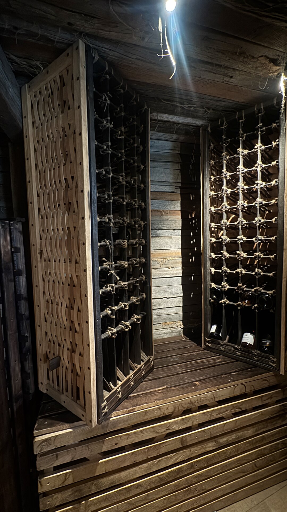

N° 02 · Commission
The Cellar.
A farmstead added to across generations. Each one left its mark.
01 · Found
The cellar began as mechanical services.
The home had a story the architect understood — a working farmstead, added to across generations, each era leaving its mark. The bar carried the old inn. The newer addition carried the modern life. The cellar carried nothing. It was mechanical services. A void beneath the floor.
Dan proposed something else.

Under construction — salvaged timber, hessian cloth, walls aged in place.
Nothing imported
that didn't have to be.
02 · Built
Roots from the land.
Walls in salvaged timber and hessian. Roots collected from the land above, set into the walls as the cellar was dug back into the earth. Wine racks built from reclaimed stock — conceived as architecture, not furniture. Local stone for the goblet, gifted on completion.
The site became its own material library.

Build progress — roots collected from the land, set into the cellar walls.
03 · Standing
A bootleggers' cellar.
Plausible enough to have always been there. A hidden room carrying the same history as the rest of the house — a chapter the place was already holding, waiting to be found.
As though it had always been there.
04 · The Racks
Architecture, not furniture.
Bentwood lattice woven by hand, forming the face of each rack. Charred timber posts in shou sugi ban. Jute-bound joinery — natural, repairable, honest.
Architecture, not furniture. Made to stand, to serve, and to last as long as the cellar around them.

The Racks — bentwood lattice, charred timber posts, jute-bound joinery.